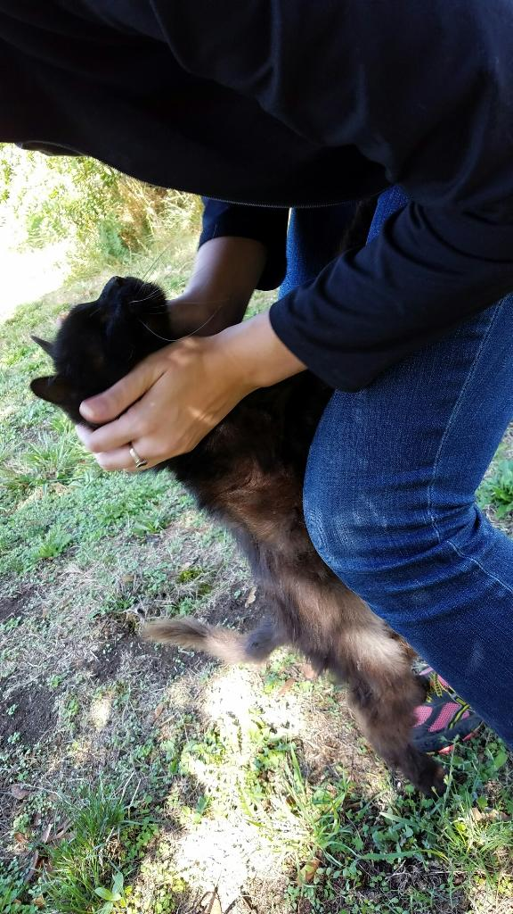

I was found on the side of the road in Cascade Locks, I suppose that's Oregon, but it's almost Washington. I was just minding my business, trying to pull mats out of my scraggly long fur and relieve some of the itching from the flea allergy causing sores under there--I'd been pretty successful at pulling out a lot of my fur, so this was just another afternoon at work. I would have been even more efficient if I didn't have to keep stopping to sneeze and shake off my runny nose. I don't know when I'd last eaten, but I was pretty bony at this point.
My now humans were there trying to cope with their sadness after their ladykit passed away by hiking and looking at mountains or something. One of them saw me under my tree and said, "What is that?" The other got a little closer to investigate. I saw her coming, and I got excited! I went right up to her. I love attention and she looked like a sucker.
They went and got lots of food and water from the town market, including deli turkey slices, which was the start of a beautiful friendship (with turkey, and I suppose them too.) They spent four hours feeding me and snuggling me and talking about what they should do. They were pretty alright. They let me lay ontop of them in the sunshine, but they kept getting up to ask people if they'd ever seen me or knew if I might be some other human's.
After a while, they got a box from the market, labeled "Eggs." They put me in this box. It was okay I guess. Boxes are pretty cool. I sat in that box for about an hour and then they let me out at a new location where a vet tech poked at me for a bit and said I wasn't in good shape, but they'd take care of me.
I didn't get deli turkey at that place.
My humans came and got me a few days later. They tell me they had to wait to see if I was claimed by someone or whatever. It was pretty cool when I got home. There were toys and soft things to sleep on and all of the foods, especially the turkey.
Now I live a pretty great life. I make turkey sandwiches with my human for my other human every morning. I'm really good at making them, and sometimes I help my human decide that he should share half of his sandwich with me. I purr really hard, which makes me drool a lot.